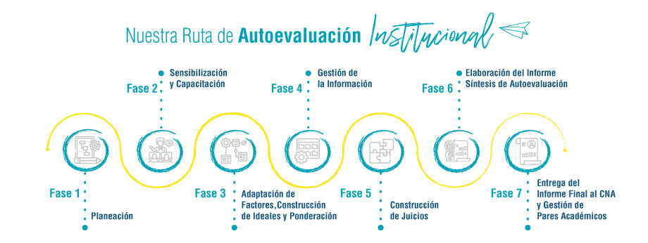

Etapa 2: autoevaluación
Planeación
Formulación e instalación del modelo institucional de autoevaluación. Definición de equipos de trabajo.
Sensibilización
Inducción y capacitación a los equipos. Plan de sensibilización a estudiantes, profesores, egresados, administrativos y aliados.
Ponderación y referentes de calidad
Construcción de significados comunes sobre los factores, características y aspectos a evaluar. Definición de la metodología de ponderación.
Gestión de la información
Recolección, clasificación y organización de la información por factor según las evidencias. Elaboración del primer documento general de autoevaluación.
Construcción de juicios
Talleres para el análisis y construcción de juicios de calidad. Visita de Pares Académicos Colaborativos para verificación de las condiciones de calidad.
Elaboración de informes de autoevaluación y planes
Elaboración documento "Informe de Autoevaluación con miras a la Acreditación Institucional".